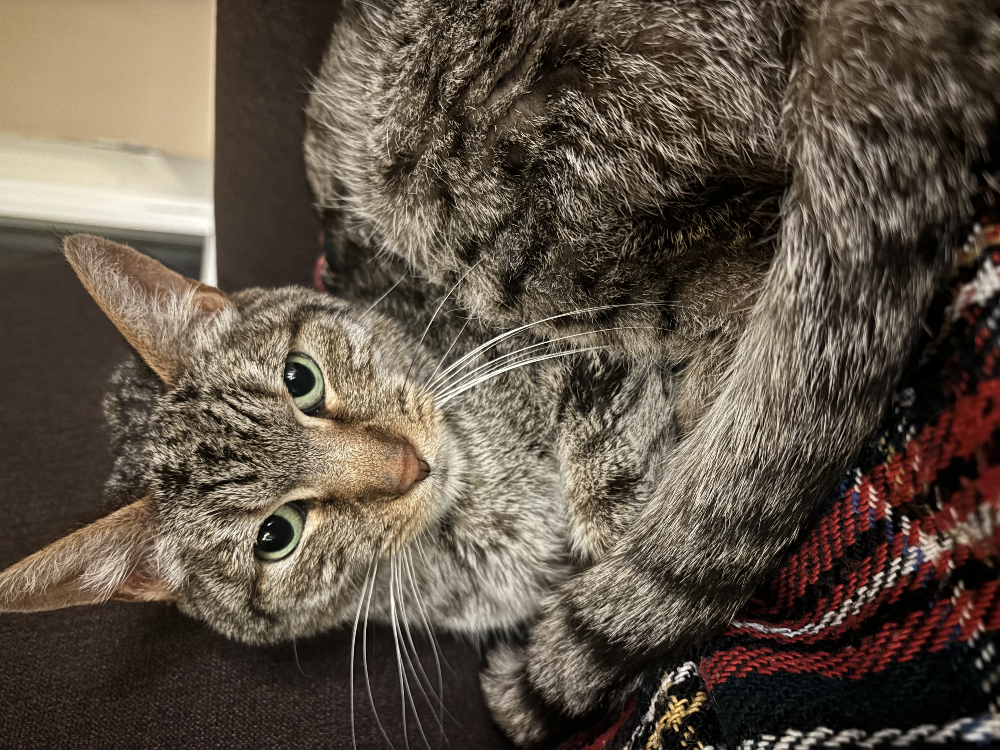
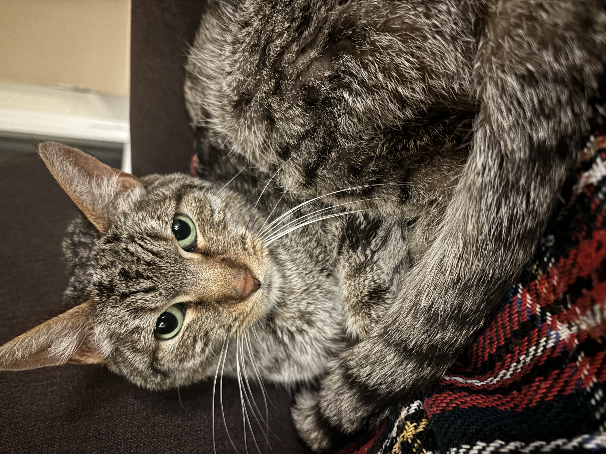
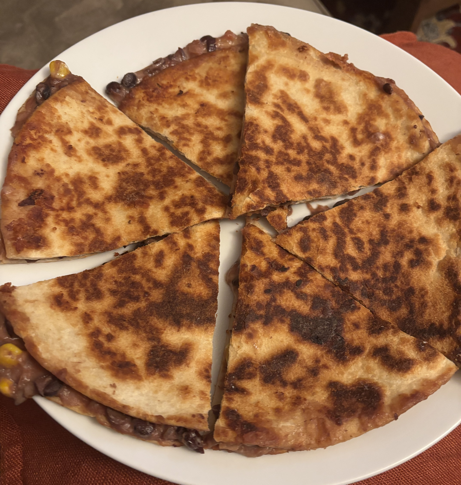
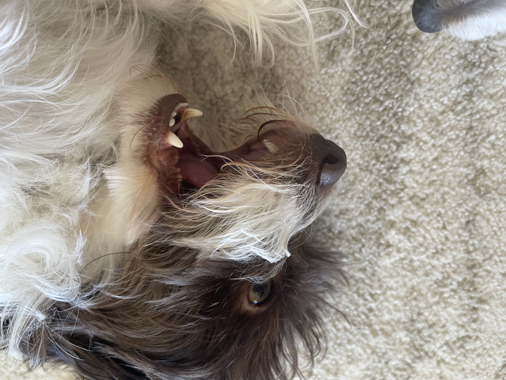
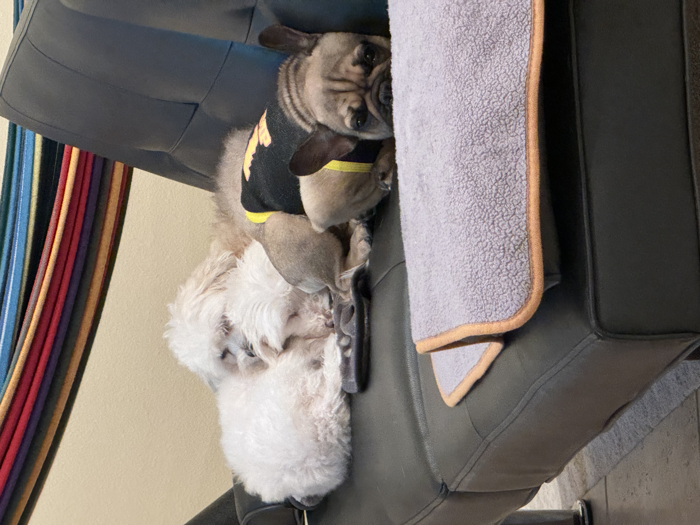
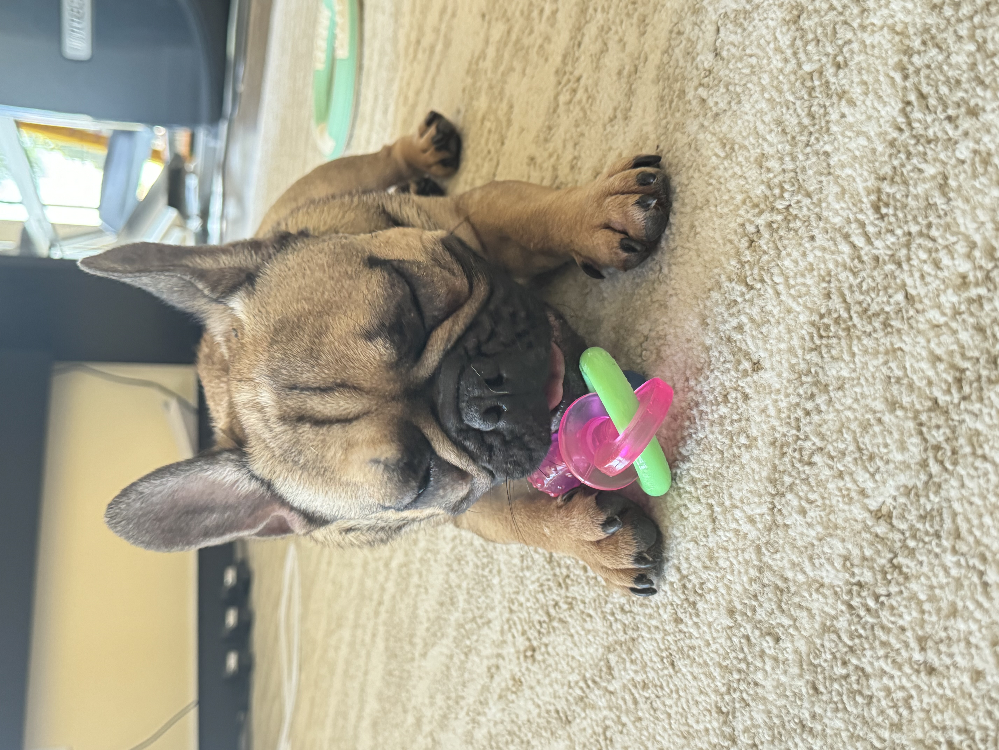
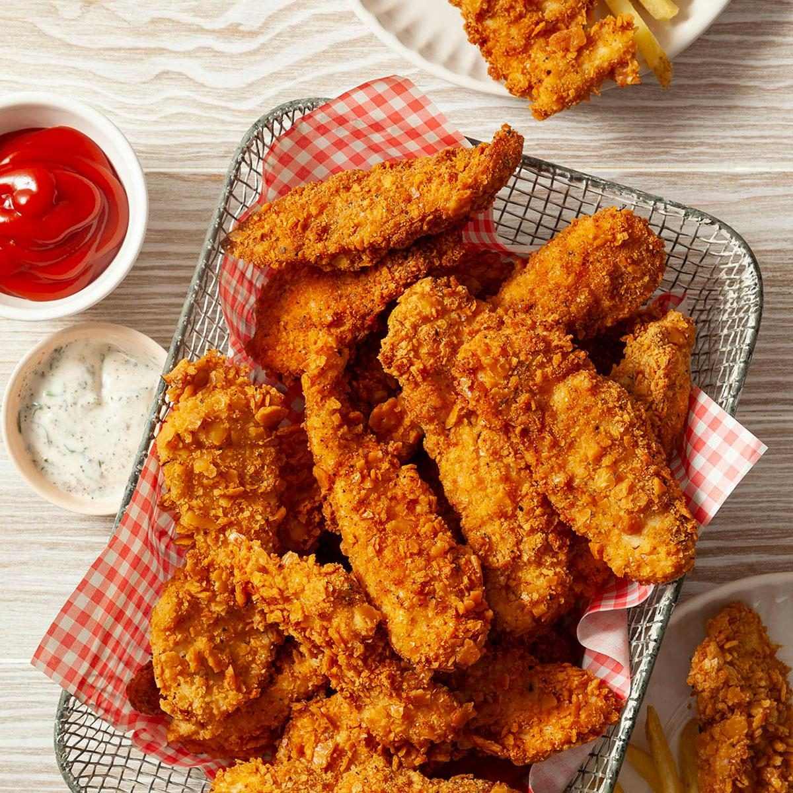

Hello World!
My name is Aidan Moore. I am a third-year pursuing a double major in Art & Design: Games and Playable Media and Spanish Studies. I am from Irvine, California in Orange County and have lived there my whole life. I'm part Colombian and Mexican on my mom's side and Scottish and British on my dad's side. I have an older sister and a twin brother. I have 1 cat currently, Ash, who lives with me on-campus. She's the first cat I've ever had on my own and she's so adorable!! I also put a photo of my cat, Mumsies, who passed away a few months ago. I've always been into video games starting with the Nintendo DS and Wii. I've also owned a 3DS, PS4, PS5, Nintendo Switch, and now I have a gaming laptop. My dream is to one day make RPGs or murder mystery visual novels. I would love to develop a Scooby Doo visual novel game with brand-new mysteries written for it.
My partner's name is Chris Lam and he is a first-year AGPM major.
Aidan's Favorites 🩷
- Favorite Animal: Cats
 
 - Favorite Food: Quesadilla
 - Favorite Movie: Bodies Bodies Bodies
- Favorite Color: Pink
- Favorite Video Game: Fire Emblem: Three Houses
Chris's Favorites
- Favorite Animal: Dogs & Whale Sharks
   - Favorite Food: Chicken Tenders
 - Favorite Movie: Coraline
- Favorite Color: Red
- Favorite Video Game: Slime Rancher